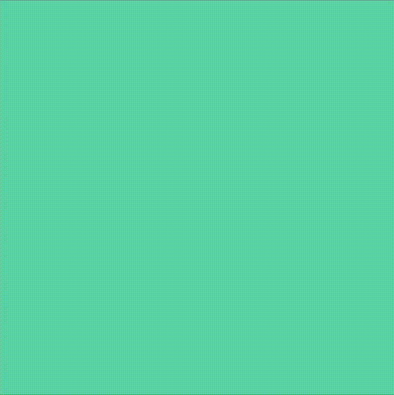

Week 5 » Activity 5
Create an animation with at least two moving shapes - one moving in a repeated motion (e.g. a pendulum or a rotating planet) and the other performing a movement after a predetermined interval of time has passed. You can add more than 2 shapes if you like.
- use trigonometric function to describe repeated motion
- use time function to calculate the interval
- de-synchronize the to movements from each other to create complex motion rhythm
- Try to use randomness and/or Perlin noise to create organic shapes.

Step 1 was to find a demo using time interval function.
Step 2 was to find a demo using random oscilatting function.
Step 3 was to combine both codes.